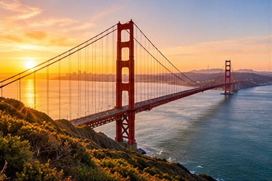
01 · San Francisco
Golden Gate Sunrise
Start early at Battery Spencer, then follow the waterfront toward the Presidio and Crissy Field.
Plan this stopA responsive California road trip guide
Build a weekend around ocean roads, mountain air, desert light, and unforgettable stops.

01 · San Francisco
Start early at Battery Spencer, then follow the waterfront toward the Presidio and Crissy Field.
Plan this stop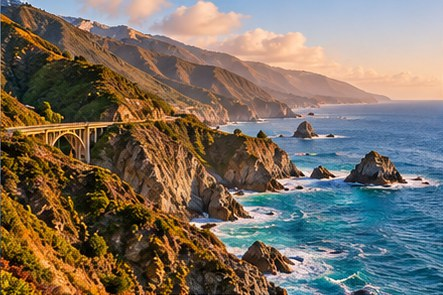
02 · Highway 1
Trace cliffside curves past Bixby Bridge, redwood groves, and wide Pacific overlooks.
Plan this stop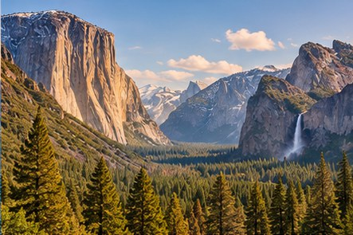
03 · Sierra Nevada
Walk beside the Merced River and look up at El Capitan, Half Dome, and seasonal waterfalls.
Plan this stop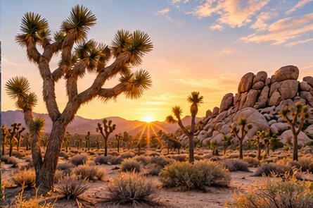
04 · High Desert
Explore sculpted boulders by day and stay after sunset for a brilliant desert sky.
Plan this stop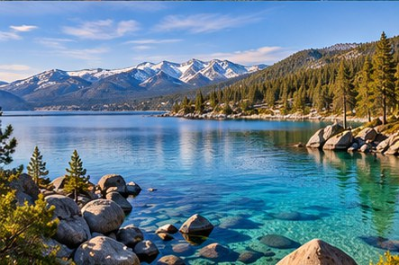
Mountain escape
Pack a lakeside picnic, walk the granite shoreline, and watch the afternoon light move across the Sierra.
Explore Tahoe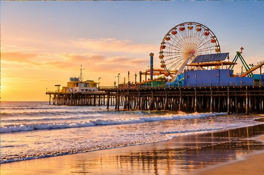
Coastal energy
Bike the beach path, stop at the pier, and finish with the Pacific turning gold beyond the Ferris wheel.
Explore the pier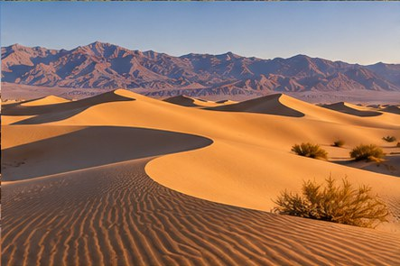
Desert detail
See rippled dunes and immense horizons in the soft light of morning.
Visit the park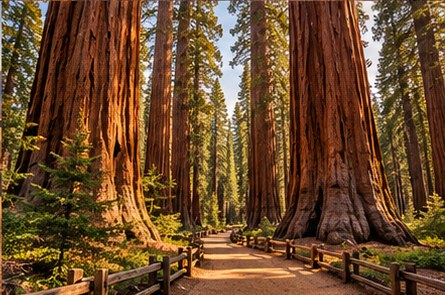
Featured route
Sequoia’s forest roads lead to trees that have stood for thousands of years. Take the Congress Trail for an easy loop through the Giant Forest.
Discover Sequoia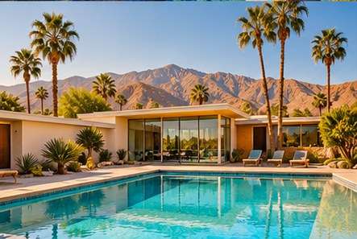
Design, sun, and desert air
Spend the morning with midcentury architecture, cool off by the pool, and drive toward the mountains before sunset.
Build a Palm Springs day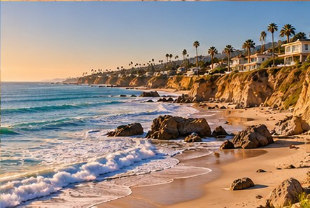
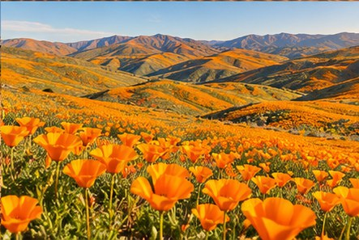
Seasonal detour
Spring rain can cover California’s hills in orange and gold. Stay on marked trails so the bloom remains beautiful for everyone.
Check bloom conditions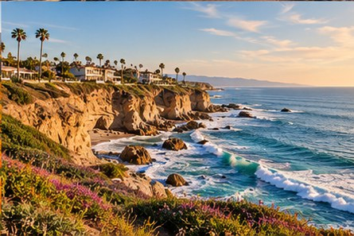
South
End the route on bluff trails above bright blue coves and crashing surf.
Find the viewpointReview closures before leaving.
Beat traffic and find parking.
Carry more than you expect.
Cell service can disappear.
Pack out everything you bring.